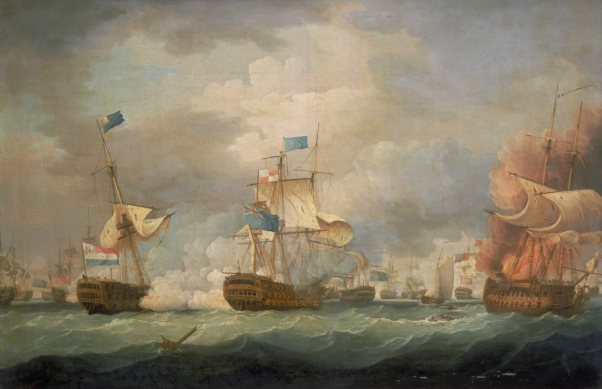
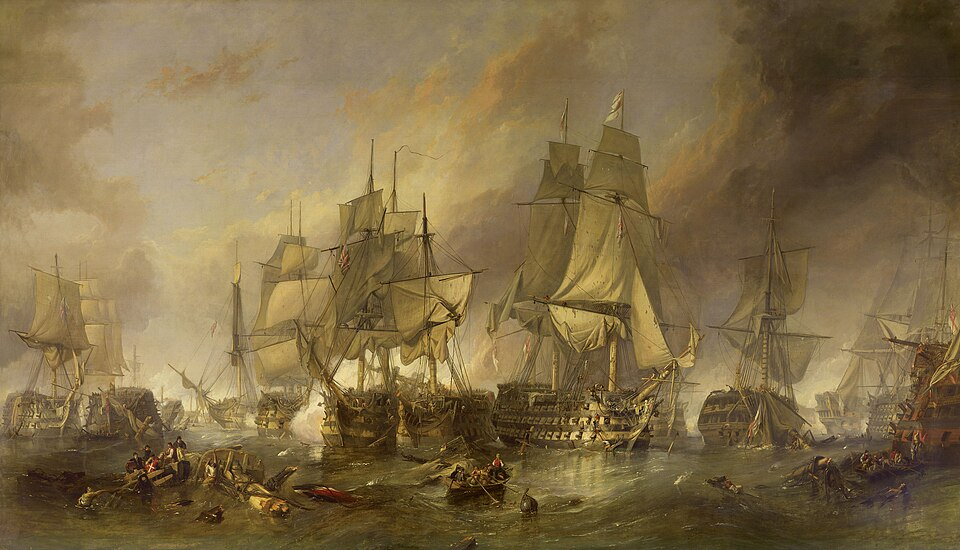
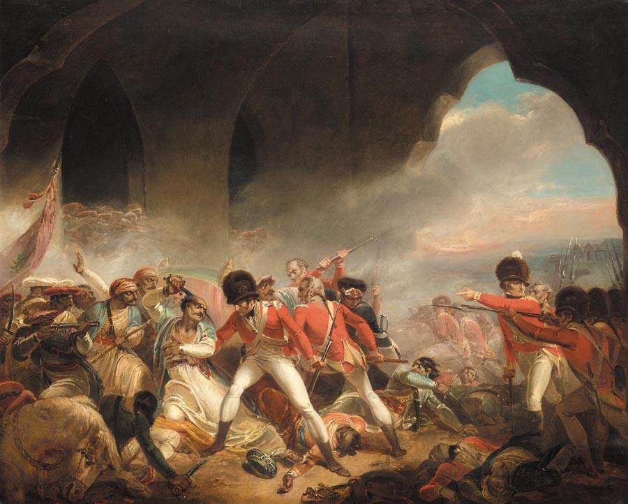
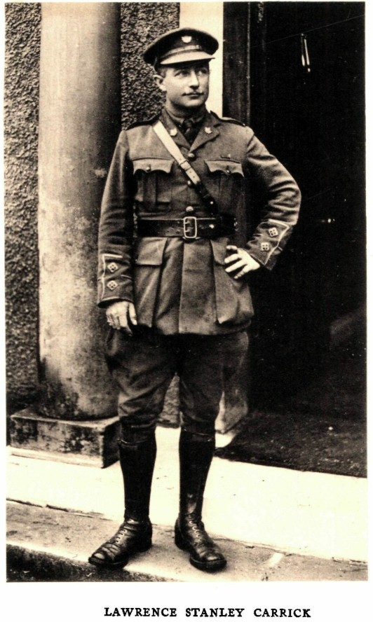
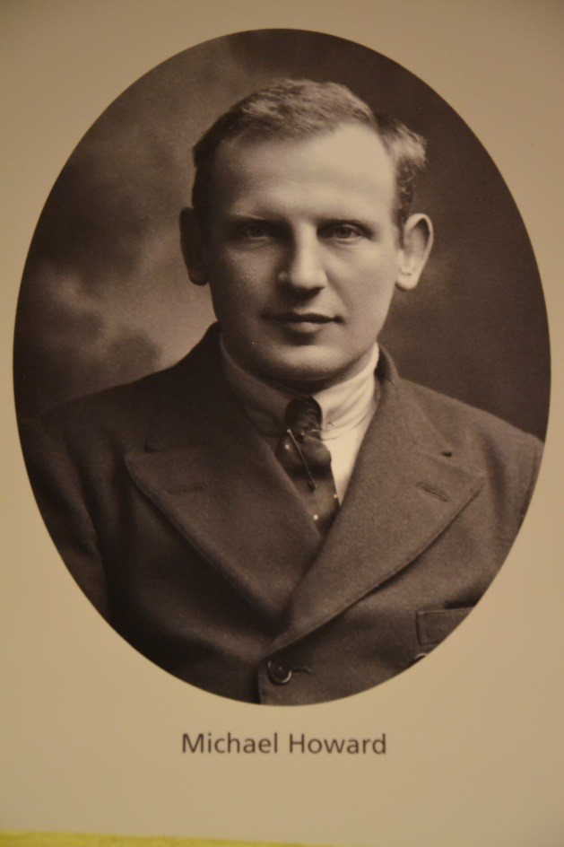
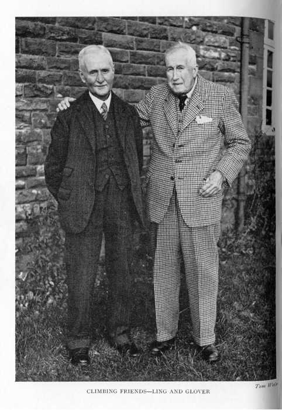

This Roll of Honour remembers men and women whose service is commemorated at Brampton Old Church and its churchyard, St Martin’s Church and churchyard in the town centre, and Brampton’s New Cemetery. It honours those who died during service, veterans who returned home, and people who supported wartime medical care and relief. Some are buried here; others are remembered locally while their graves or official memorials lie elsewhere.
Entries are arranged by conflict or period of service. Each card gives a short account; select Read full biography for the fuller story and the sources used. Where one person served in more than one conflict, separate cards are linked and open the same full biography covering all their service. Within each period, recorded ranks run from senior to junior; entries without a recorded rank and civilian support roles follow. A memorial reference identifies an inscription, not necessarily a burial.
Biographies draw on local accounts and the individual records linked below each entry. Memorial wording, casualty records and later research sometimes differ; those differences are retained where they cannot be securely resolved. A linked record described as a possible identification is a research lead, not a confirmed service history.
Additions or corrections are welcome. Please contact Brittany here.
French Revolutionary and Napoleonic Wars (1792–1815)
Naval service remembered at Brampton, including Camperdown, Copenhagen and Trafalgar.

Old ChurchyardG16
Commander Charles Burrough
Royal Navy; First Lieutenant, HMS Russell at Camperdown, 11 October 1797; later Master and Commander. Died 13 July 1810, aged 57.
Charles Burrough was First Lieutenant of the 74-gun HMS Russell at the Battle of Camperdown in 1797. His Old Churchyard memorial records both that service and his later rank of Master and Commander.
Brampton memorial location Old Churchyard · G16
Burial / commemoration Brampton Old Churchyard; family memorial G16.

Old ChurchyardE77
Edward English
Naval veteran of Copenhagen and Trafalgar; rank and ship not recorded on the memorial. Died 25 July 1846, aged 67.
Edward English is remembered on his family stone as a veteran of Copenhagen and Trafalgar. He lived to the age of sixty-seven and was commemorated in the Old Churchyard with his wife Rebecca and their infant daughter Hannah.
Brampton memorial location Old Churchyard · E77
Burial / commemoration Brampton Old Churchyard; family memorial E77.
Fourth Anglo-Mysore War (1799)
A memorial in St Martin's Church remembers service at the siege of Seringapatam.

St Martin's ChurchN17
Captain Mark Deane Buckeridge
Captain, 74th Regiment of Foot; siege of Seringapatam, 1799. Died after the siege; sources give his age as 27 or 29.
Mark Deane Buckeridge of Brampton matriculated at St John’s College, Oxford, in 1793 and later served with the 74th Regiment at Seringapatam. He survived the siege but died of fever afterwards. Sources disagree over his age, giving twenty-seven or twenty-nine.
Brampton memorial location St Martin's Church · N17
Burial / commemoration The Gentleman’s Magazine account records burial at Seringapatam, India. The Brampton memorial is inside St Martin's Church, N17.
Egypt and Red Sea service (1888–1900)
The period of an Egyptian Coastguard career which included active service in the Red Sea.

Old ChurchyardA123
William John Lawson
Bimbashi, Egyptian Coastguard Administration; active service in the Red Sea during his Egyptian career, 1888-1900. Died in 1926, aged 65.
An engineer and former officer of the Egyptian Coastguard Administration, William John Lawson saw active service in the Red Sea. After settling in Brampton, he and his wife offered their home, Westwood, for a war memorial cottage hospital.
Brampton memorial location Old Churchyard · A123
Burial / commemoration Brampton Old Churchyard; memorial A123.
South African War (1899–1902)
Service in the South African War, also known as the Boer War. Later First World War service is linked from the relevant cards.

Old Churchyard E122
St Martin's Church N5 · N8
Lieutenant Lawrence Stanley Carrick
East Griqualand Mounted Rifles · Second Boer War (1901–1902)
Carrick served with the East Griqualand Mounted Rifles during the final year of the Second Boer War. He subsequently emigrated to Alberta, where he farmed and served with the Canadian Light Horse and Royal North-West Mounted Police. He later joined the Canadian Expeditionary Force. See his First World War profile .
Brampton memorial location Old Churchyard · E122 (family memorial)
Burial / commemoration No known grave; commemorated on the Vimy Memorial, France

St Martin’s ChurchN5
Lieutenant the Hon. Michael Francis Stafford Howard
Lieutenant, 18th Hussars · South African (Boer) War service
Michael Francis Stafford Howard served as a lieutenant in the 18th Hussars during the South African War. He later served in France and East Africa in the First World War before enlisting as a private in the Honourable Artillery Company. See his First World War profile.
Brampton memorial location St Martin’s Church · N5 · First World War memorial
Burial / commemoration Tyne Cot Memorial.
Old ChurchyardD112
William Blain
South African Constabulary (Baden-Powell’s Mounted Police) · Former Sergeant, Manchester Regiment · wounded 24 May 1901 · died 3 June 1901, aged 31
William Blain served in the South African Constabulary during the South African War. Born in 1870, he was wounded at Engelbrecht Drift and died in June 1901; his brother John later lost his life in the First World War. Read his brother John Blain's First World War profile.
Brampton memorial location Old Churchyard · D112
Burial / commemoration Commemorated on the Blain family memorial in Brampton Old Churchyard, D112. The inscription does not identify his burial place.
Old ChurchyardA46
William Spooner
Border Regiment volunteer, South African War, 1901-1902; later Regimental Sergeant-Major. Died 25 July 1930.
William Spooner went to South Africa in 1901 with a volunteer service company of the Border Regiment and remained until the war ended. He later settled in Brampton and returned to military service during the First World War. Read his First World War profile.
Brampton memorial location Old Churchyard · A46
Burial / commemoration Brampton Old Churchyard; family memorial A46.
First World War (1914–1918)
Those who served in the First World War, including veterans who returned home, those who died during or after service, and people who supported wartime medical care and relief.

Old ChurchyardC58
Colonel George Tertius Glover
Colonel, Royal Engineers; First World War service, 1914-1918. Died 24 June 1953.
George Tertius Glover, of Park Barns, is commemorated as a Royal Engineers colonel who served in 1914-1918. His family memorial records his life from February 1870 to June 1953 and also remembers his wife Ann Harvey Glover.
Brampton memorial location Old Churchyard · C58
Burial / commemoration Brampton Old Churchyard; family memorial C58.
Old ChurchyardA133
Surgeon-Major William Symington TD
Surgeon-Major, Royal Army Medical Corps, attached to 4th Battalion Border Regiment; Territorial Decoration. Died 3 September 1916, aged 51.
William Symington combined almost three decades as a Brampton doctor with military medical service. His casualty record identifies the Royal Army Medical Corps, attached to the 4th Border Regiment, and records the Territorial Decoration. He died at Brampton in September 1916 after illness.
Brampton memorial location Old Churchyard · A133
Burial / commemoration Brampton Old Churchyard.
St Martin’s ChurchN5
Identity partly establishedCaptain James Mitchell
Captain, Royal Fusiliers
Brampton’s Book of Remembrance and church memorial both identify James Mitchell as a captain in the Royal Fusiliers. The available records do not securely connect him with a particular casualty record or biography.
Brampton memorial location St Martin’s Church · N5 · First World War memorial
Burial / commemoration Not established from the available records.
Old Churchyard E122
St Martin's Church N5 · N8
Lieutenant Lawrence Stanley Carrick
Lieutenant, 49th Battalion Canadian Infantry (Alberta Regiment), service no. 1932 · died 15 September 1916, aged 34
Born in Brampton in 1882, Lawrence Stanley Carrick served in the Second Boer War before emigrating to Alberta, where he joined the Canadian Light Horse and Royal North-West Mounted Police. He enlisted in September 1914 with the 19th Alberta Dragoons and later served as a lieutenant in the 49th Battalion. He was killed by a sniper during the fighting at Courcelette on 15 September 1916 and has no known grave. See his South African War profile .
Brampton memorial locations Old Churchyard · E122; St Martin's Church · N5 and N8
Burial / commemoration Canadian National Vimy Memorial, France · no known grave
St Martin’s ChurchN5
Lieutenant Joseph Armstrong
Lieutenant, Royal Field Artillery · died 5 May 1917, aged 29
Joseph Armstrong, a native of Westbourne, Brampton, served as a lieutenant in the Royal Field Artillery. He died on 5 May 1917, aged twenty-nine.
Brampton memorial location St Martin’s Church · N5 · First World War memorial
Burial / commemoration Bois-de-Noulette British Cemetery · grave II.F.1.
St Martin’s ChurchN5
Lieutenant the Hon. Michael Francis Stafford Howard
Private, Honourable Artillery Company, service no. 10246; formerly Lieutenant, 18th Hussars · died 9 October 1917
Michael Francis Stafford Howard had served as an 18th Hussars officer in the South African War and later in France and East Africa. In 1917, after illness, he enlisted as an ordinary private in the Honourable Artillery Company and was killed near Polygon Wood during the Passchendaele fighting. See his South African War profile.
Brampton memorial location St Martin’s Church · N5 · First World War memorial
Burial / commemoration Tyne Cot Memorial.
Old ChurchyardB47
Second Lieutenant Arthur Hetherington
Second Lieutenant, 9th Battalion King’s Own Yorkshire Light Infantry · died 21/22 March 1918, aged 29
A former Brampton schoolteacher, Arthur Hetherington rose from the ranks to a commission in the King’s Own Yorkshire Light Infantry. He was lost during the German spring offensive in March 1918 when his platoon was caught by machine-gun fire and his comrades were forced to withdraw.
Brampton memorial location Old Churchyard · B47
Burial / commemoration His body could not be recovered; no burial location has been established.
Old ChurchyardB69
Second Lieutenant Joseph Harding
Second Lieutenant, 3rd Battalion Border Regiment attached to 2nd Battalion · died 6 October 1917, aged 21
Joseph Harding had already fought on the Somme before receiving a commission. He disappeared during the fighting at Passchendaele on 6 October 1917 and was later officially presumed dead.
Brampton memorial location Old Churchyard · B69
Burial / commemoration Tyne Cot Memorial · panels 85–86
Old ChurchyardA46
Regimental Sergeant-Major William Spooner
Retired Regimental Sergeant-Major; wartime instructor and Sergeant-Major, 5th Border Regiment. Died 25 July 1930.
Already a South African War veteran, William Spooner volunteered again in 1914 despite being retired and above military age. He trained officers at Codford and Boscombe before serving as Sergeant-Major with the 5th Border Regiment at Barrow. Read his South African War profile.
Brampton memorial location Old Churchyard · A46
Burial / commemoration Brampton Old Churchyard; family memorial A46.
Old ChurchyardC51
Company Sergeant-Major Hamilton V. Harding
Company Sergeant-Major, Border Regiment, service no. 17465 · died 19 August 1917, aged 34
Hamilton V. Harding was a former Brampton councillor, musician and Talkin Tarn rower. He was wounded by a bomb near a dugout on 18 August 1917 and died at a casualty clearing station the following day.
Brampton memorial location Old Churchyard · C51
Burial / commemoration Brandhoek New Military Cemetery No. 3 · grave II.J.12
St Martin’s ChurchN5
Company Sergeant-Major Thomas Charles Sidney Scott MM
Company Sergeant-Major, 8th Border Regiment, service no. 5964 · Military Medal · died 12 March 1918, aged 21
Thomas Charles Sidney Scott had reached Company Sergeant-Major and held the Military Medal by the age of twenty-one. He died on 12 March 1918 and was buried locally at Farlam.
Brampton memorial location St Martin’s Church · N5 · First World War memorial
Burial / commemoration Farlam (St Thomas à Becket) Churchyard, at the south-east corner of the church.
St Martin’s ChurchN5
Company Sergeant-Major Emmerson Dickinson Waugh DCM
Company Sergeant-Major, 8th Border Regiment, service no. 15865 · Distinguished Conduct Medal · died 13 April 1918, aged 26
Emmerson Dickinson Waugh rose to Company Sergeant-Major in the 8th Border Regiment and was awarded the Distinguished Conduct Medal. He died on 13 April 1918, aged twenty-six, and has no known grave.
Brampton memorial location St Martin’s Church · N5 · First World War memorial
Burial / commemoration Ploegsteert Memorial · panel 6.
Old ChurchyardC16 · C17
Sergeant John Patterson Aikman MM
Sergeant 68092, Canadian Machine Gun Corps; Military Medal; served as Patterson. Died 13 April 1918; recorded ages differ, 32 and 34.
John Patterson Aikman served in the Canadian Machine Gun Corps under the name Patterson and received the Military Medal. Local and Buckinghamshire accounts place his death at Aylesbury Military Hospital. He was brought home for burial at Brampton; sources differ over his age and birthplace.
Brampton memorial location Old Churchyard · C16 (military headstone) and C17 (family memorial)
Burial / commemoration Brampton Old Churchyard.
St Martin’s ChurchN5
Probable identificationPetty Officer C. D. Hetherington
Petty Officer, Royal Naval Division · probably Cyril Dudley Hetherington
Brampton’s war tablet records C. D. Hetherington as a Petty Officer in the Royal Naval Division. Biographical records for Arthur Hetherington identify a cousin named Cyril Dudley Hetherington, making that identification highly probable.
Brampton memorial location St Martin’s Church · N5 · First World War memorial
Burial / commemoration Not established from the available records.
St Martin’s ChurchN5
Sergeant Thomas Ruddick
Sergeant, 279th Siege Battery Royal Garrison Artillery · died 17 November 1917, aged 30
Thomas Ruddick had worked as a clerk for the North Eastern Railway before serving with the 279th Siege Battery, Royal Garrison Artillery. He died of wounds on 17 November 1917.
Brampton memorial location St Martin’s Church · N5 · First World War memorial
Burial / commemoration Wimereux Communal Cemetery · grave VI.H.6A.
Old ChurchyardB116
Sergeant George Waugh
Sergeant-instructor in signalling, Royal Garrison Artillery; France, 1915-1918. Died 25 November 1921, aged 29.
A Brampton musician and oarsman, George Waugh served in France as a Royal Garrison Artillery signalling instructor. He returned from the war in impaired health and died in 1921, aged twenty-nine.
Brampton memorial location Old Churchyard · B116
Burial / commemoration Brampton Old Churchyard; family memorial B116.
Old ChurchyardB79
Sergeant John Mark
Brampton Volunteer platoon; sergeant in charge of the wartime observation post. Died 1 July 1919.
John Mark, Brampton Rural District Council's road surveyor, served in the town's Volunteer platoon during the First World War. He was the sergeant responsible for the observation post in the Secondary School grounds.
Brampton memorial location Old Churchyard · B79
Burial / commemoration Commemorated on family memorial B79 in Brampton Old Churchyard.
Old ChurchyardB28
Corporal Thomas George “Tom” Armstrong
Corporal, 11th Border Regiment (Lonsdale Battalion), service no. 19591 · died 1 July 1916
Thomas George Armstrong of Beck Side, Brampton, served with the Lonsdale Battalion and was killed on the first day of the Battle of the Somme. A letter to his sister said that he was hit by a shell and died shortly afterwards in the arms of a sergeant.
Brampton memorial location Old Churchyard · B28
Burial / commemoration Thiepval Memorial, France, pier and face 6A and 7C; no known grave.
St Martin’s ChurchN5
Corporal Henry Shadwick
Corporal, 7th Battalion Border Regiment, service no. 19594 · died 28 October 1917, aged 22
Henry Shadwick, a Brampton painter, enlisted in May 1915 and later returned to duty after treatment for trench foot. He was killed on 28 October 1917, aged twenty-two.
Brampton memorial location St Martin’s Church · N5 · First World War memorial
Burial / commemoration Tyne Cot Memorial.
St Martin’s ChurchN5
Identity recorded by initialsCorporal J. W. Simpson
Corporal, 8th Border Regiment
Brampton’s memorial records J. W. Simpson as a corporal in the 8th Border Regiment. The available records do not securely establish a full name, service number or date of death.
Brampton memorial location St Martin’s Church · N5 · First World War memorial
Burial / commemoration Not established from the available records.
St Martin’s ChurchN5
Corporal John Edward Taylor MM
Corporal, Northumberland Fusiliers, service no. 200520 · Military Medal · died 26 October 1917, aged 22
John Edward Taylor served as a corporal in the Northumberland Fusiliers and was awarded the Military Medal. He died on 26 October 1917, aged twenty-two.
Brampton memorial location St Martin’s Church · N5 · First World War memorial
Burial / commemoration Tyne Cot Memorial, Belgium, panels 19 to 23; no known grave.
St Martin’s ChurchN5
Corporal William Edgar Taylor
Corporal 197878, Royal Engineers, 17th Division Signal Company; formerly Border Regiment and Durham Light Infantry. Died 12 October 1917, aged 22.
William Edgar Taylor, a former Brampton and Bede College student, served in the Royal Engineers after earlier infantry service. He died in October 1917, aged twenty-two. Sources differ over his birth year.
Brampton memorial location St Martin’s Church · N5 · First World War memorial
Burial / commemoration Cement House Cemetery, Belgium · grave XV.D.6
Old ChurchyardD140
Corporal James Smith
Corporal; unit not stated on the family memorial. Died 11 August 1917 at Belmont Road Hospital, Liverpool, aged 47.
Corporal James Smith was the eldest son of George Smith of New Brewery, Brampton. His family memorial records his death at Belmont Road Hospital in Liverpool in August 1917, aged forty-seven.
Brampton memorial location Old Churchyard · D140
Burial / commemoration Commemorated on the Smith family memorial, D140, in Brampton Old Churchyard. His burial place is not identified in the inscription.
Old ChurchyardC32
Corporal Mervyn Eugene Wilson
Corporal 19397, 8th Battalion Border Regiment. Died 18 June 1917, aged 28; local sources also give Lance-Corporal.
Mervyn Eugene Wilson worked for the North Eastern Railway at Brampton Town. After wounds at Gallipoli and a return to service, he died in June 1917. His casualty and railway records give corporal, rather than the lance-corporal in the local account.
Brampton memorial location Old Churchyard · C32
Burial / commemoration Bailleul Communal Cemetery Extension · grave III.D.54
Old ChurchyardB60
Lance-Corporal William Frederick Smith
Private / Lance-Corporal, Machine Gun Corps (Infantry), service no. 29360 · died 23 January 1917, aged 22
William Frederick Smith, son of a Market Place boot and shoemaker, was well known locally as a footballer and champion oarsman. He was killed when a German shell passed through the roof of his dugout, killing him and three comrades.
Brampton memorial location Old Churchyard · B60
Burial / commemoration Guards’ Cemetery, Combles · grave II.A.15
Old ChurchyardB86
Lance-Corporal Matthew William Holmes
Lance-Corporal, 6th Border Regiment · died 9 August 1915, aged 29
Matthew William Holmes served with the 6th Border Regiment at Gallipoli. First reported wounded and then missing in the Dardanelles, his fate remained uncertain for more than a year before his death was officially presumed.
Brampton memorial location Old Churchyard · B86
Burial / commemoration Helles Memorial · no known grave
Old ChurchyardB1 · B2
Lance-Corporal James Campbell
Lance-Corporal, Border Regiment, service no. 19621 · died 30/31 October 1918, aged 21
James Campbell, formerly of the Lonsdale Battalion, died during Brampton’s severe influenza outbreak in late October 1918. His mother died four days later and his seventeen-year-old brother Thomas died on 11 November.
Brampton memorial location Old Churchyard · B1 (family memorial) and B2 (military headstone)
Burial / commemoration Brampton Old Churchyard.
St Martin’s ChurchN5
Identity recorded by initialsLance-Corporal E. M. Harding
Lance-Corporal, Northumberland Fusiliers
Brampton’s Book of Remembrance and war tablet record E. M. Harding as a lance-corporal in the Northumberland Fusiliers. The surviving records do not securely establish his full identity.
Brampton memorial location St Martin’s Church · N5 · First World War memorial
Burial / commemoration Not established from the available records.
St Martin’s ChurchN5
Lance-Corporal John Lowthian
Lance-Corporal, King’s Own Scottish Borderers · died 25 September 1915, aged 30
John Lowthian served with the King’s Own Scottish Borderers and was killed in action at Loos on 25 September 1915, aged thirty.
Brampton memorial location St Martin’s Church · N5 · First World War memorial
Burial / commemoration Not identified in the available records.
St Martin’s ChurchN5
Lance-Corporal Michael McCabe
Lance-Corporal, King’s Own Scottish Borderers · died 1914
Michael McCabe of Brampton served as a lance-corporal in the King’s Own Scottish Borderers. Cumberland newspaper indexing records that he died at the American Hospital in Paris in 1914.
Brampton memorial location St Martin’s Church · N5 · First World War memorial
Burial / commemoration Not identified in the available records.
St Martin’s ChurchN5
Lance-Corporal John James Nelson
Lance-Corporal 41406, 26th (Tyneside Irish) Battalion Northumberland Fusiliers. Died 9 April 1917, aged 26.
John James Nelson served with the Northumberland Fusiliers and was killed on 9 April 1917. His father, John Charles Nelson, lived at 11 Low Cross Street, Brampton.
Brampton memorial location St Martin’s Church · N5 · First World War memorial
Burial / commemoration Orchard Dump Cemetery, Arleux-en-Gohelle · grave VI.H.26
St Martin’s ChurchN5
Identity recorded by initialsLance-Corporal T. Wright
Lance-Corporal, Cumberland & Westmorland Yeomanry
Brampton’s memorial records T. Wright as a lance-corporal in the Cumberland & Westmorland Yeomanry. No fuller identification has yet been securely established.
Brampton memorial location St Martin’s Church · N5 · First World War memorial
Burial / commemoration Not established from the available records.
Old ChurchyardA89
Lance-Corporal John O’Hara
Lance-Corporal, Northumberland Fusiliers · died 17 May 1918, aged 39
John O’Hara of the Northumberland Fusiliers died on 17 May 1918, aged thirty-nine. He was from a Gelt Road family and was married to Margaret Ann O’Hara.
Brampton memorial location Old Churchyard · A89
Burial / commemoration Boulogne Eastern Cemetery
Old ChurchyardB21
Bugler Thomas Fallowfield “Tom” Mounsey
Bugler / Private, 11th Border Regiment (Lonsdale Battalion), service no. 17605 · died 18 November 1916, aged 33
Tom Mounsey, a mason and native of Hackthorpe, enlisted in February 1915 and served with the Lonsdale Battalion. He was reported missing on 18 November 1916; his family initially hoped he had been taken prisoner, but he was later confirmed dead.
Brampton memorial location Old Churchyard · B21
Burial / commemoration Thiepval Memorial · no known grave
Old ChurchyardB37
Private Mark William Richardson
Private, 6th Battalion Border Regiment, service no. 10895 · died 23 November 1916
Mark William Richardson was the son of Mark and Susan Richardson of Longtown and a grandson of the Brampton Richardson family. He served in the 6th Border Regiment and was killed in action in France on 23 November 1916.
Brampton memorial location Old Churchyard · B37
Burial / commemoration Burial place not identified in the available records; also commemorated at Longtown.
Old ChurchyardB67
Private George Taylor
Private, 4th Border Regiment · died 31 March 1915, aged 25
George Taylor of Carlisle Road served with the 4th Border Regiment and went overseas in late 1914. He died on active service at Maymyo in Upper Burma on 31 March 1915, aged twenty-five.
Brampton memorial location Old Churchyard · B67
Burial / commemoration Taukkyan War Cemetery, Myanmar · grave 27.J.7
Old ChurchyardB66 · B67
Driver Thomas James “Tom” Taylor
Driver T/390415, Army Service Corps; formerly Royal Field Artillery. Died 30 June 1918, aged 30.
Thomas James Taylor, brother of George Taylor, served in the Army Service Corps after originally enlisting in the Royal Field Artillery. He died of illness at the Royal Herbert Hospital, Woolwich, and was brought home for burial in Brampton.
Brampton memorial location Old Churchyard · B66 (military headstone) and B67 (family memorial)
Burial / commemoration Brampton (St Martin) Old Churchyard, south-west part; military headstone B66 and family memorial B67.
Old ChurchyardB85
Private Lorne Ramshay Winthrop
Private, 2nd/4th Battalion East Lancashire Regiment, service no. 30167 · died 10 October 1917, aged 23
Lorne Ramshay Winthrop was killed in Belgium in October 1917. Official casualty records place him in the 2nd/4th East Lancashire Regiment and give 10 October as his date of death, while Brampton and family memorials preserve different unit and date details.
Brampton memorial location Old Churchyard · B85
Burial / commemoration Tyne Cot Memorial
Old ChurchyardB92
Private Joseph William Warwick
Private, Durham Light Infantry · died 15 December 1917, aged 24/25
Joseph William Warwick served in the Durham Light Infantry and was killed in action at Ypres. Before the war he sang in St Martin’s choir and had won a gold medal for singing at the Carlisle Musical Festival.
Brampton memorial location Old Churchyard · B92
Burial / commemoration Oxford Road Cemetery, Belgium · grave V.H.15
Old ChurchyardB96
Private Thomas William Potts
Private, 11th Border Regiment (Lonsdale Battalion), service no. 21450 · died 30 May 1916, aged 24/25
Thomas William Potts had been at the front for only about a month when he was killed on 30 May 1916. His officer described how the men had finished their work and were talking and smoking together when a German shell burst nearby.
Brampton memorial location Old Churchyard · B96
Burial / commemoration Authuile Military Cemetery · grave C.6
Old ChurchyardB102
Private George Harold Burton
Private, Royal Fusiliers · died 17 August 1918, aged 19
George Harold Burton was only nineteen when he was killed near Albert, France. A newspaper report said he was shot by an enemy sniper while out on patrol; before enlistment he had attended Brampton County Secondary School and taken part in local sport.
Brampton memorial location Old Churchyard · B102
Burial / commemoration Not securely established from the available records.
Old ChurchyardB119
Private Leslie Thompson
Private, Northumberland Fusiliers · died 10 June 1916, aged 25
Leslie Thompson was killed at his post during German shelling on 10 June 1916. He was the eldest son of a family formerly of Armathwaite and the husband of Bessie Thompson.
Brampton memorial location Old Churchyard · B119
Burial / commemoration Bécourt Military Cemetery · grave I.O.17
Old ChurchyardC28
Private Hugh Phillips Nixon
Private, Machine Gun Corps (Infantry), service no. 13174 · died 30/31 October 1916, aged 20
Hugh Phillips Nixon died at Cleave Hill Military Hospital, Bristol, and was brought home to Brampton. His funeral was conducted with military honours, including a firing party, three volleys and the Last Post.
Brampton memorial location Old Churchyard · C28
Burial / commemoration Brampton Old Churchyard.
Old ChurchyardD23
Private Hubert Bell
Private, 1st Battalion Cheshire Regiment, service no. 60526 · died 25 October 1917, aged 19
Hubert Bell worked in the Boothby estate office before enlisting at eighteen. He had been at the front for only ten days when he was killed at Polderhoek on 25 October 1917.
Brampton memorial location Old Churchyard · D23
Burial / commemoration Tyne Cot Cemetery
Old ChurchyardD112
Private John Blain
Private, 13th Battalion Canadian Infantry (Royal Highlanders of Canada), service no. 63105 · died 4 November 1917, aged 43
John Blain, born in 1874, enlisted in Montreal and served with the 13th Battalion Canadian Infantry. Brampton’s memorial says that he “gave his life for his country on Passchendaele Ridge”; he died on 4 November 1917 and has no known grave.
Brampton memorial location Old Churchyard · D112
Burial / commemoration Ypres (Menin Gate) Memorial, panels 24, 26, 28 and 30; no known grave.
Old ChurchyardI91
Private Robert Bell
Private, Border Regiment, service no. 18276 · died 16 October 1916, aged 40
Robert Bell had served overseas at Salonica before being invalided home with dysentery. In October 1916 his body was found in the River Gelt after he had left home saying that he intended to travel to Carlisle.
Brampton memorial location Old Churchyard · I91
Burial / commemoration Brampton Old Churchyard.
New CemeteryK16
Private William Henry Douthwaite
Private 200666, 2nd/4th Battalion Border Regiment. CWGC date of death 26 October 1918, aged 24; family memorial gives 25 October.
William Henry Douthwaite, son of William Henry and Margaret Jane Douthwaite, died in India while on active service in October 1918. His family stone and casualty record differ by one day on the date of death.
Brampton memorial location New Cemetery · K16 · family memorial
Burial / commemoration Delhi Memorial (India Gate), Face 1; CWGC records burial in Peshawar (Right) British Cemetery, XLV.18.
St Martin’s ChurchN5
Identity recorded by initialsPrivate G. S. Armstrong
Private, Durham Light Infantry (possibly 10th Battalion)
Local memorial sources place G. S. Armstrong in the Durham Light Infantry, with the Book of Remembrance apparently specifying the 10th Battalion. The initials cannot yet be linked securely to a fuller casualty record.
Brampton memorial location St Martin’s Church · N5 · First World War memorial
Burial / commemoration Not established from the available records.
St Martin’s ChurchN5
Private Peter Burn
Private, Royal Welsh Fusiliers, service no. 73519 · died 22 April 1918, aged 19
Peter Burn, son of Pulsford and Mary J. Burn of Rosedale, Brampton, served in the Royal Welsh Fusiliers. He died in April 1918, aged nineteen, and is buried at Bouzincourt Communal Cemetery Extension in France.
Brampton memorial location St Martin’s Church · N5 · First World War memorial
Burial / commemoration Bouzincourt Communal Cemetery Extension, France, grave IV.A.37.
St Martin’s ChurchN5
Sapper Thomas Dobinson
Sapper 3594, 1st Australian Tunnelling Company, Australian Imperial Force. Enlisted 27 January 1916; died 23 October 1916, aged 30.
Brampton-born Thomas Dobinson was working as a labourer in Sydney when he enlisted in January 1916. He sailed from Australia in May and served as a tunnelling sapper. Australian records identify his service, correcting the Canadian description on the Brampton memorial.
Brampton memorial location St Martin’s Church · N5 · First World War memorial
Burial / commemoration Railway Dugouts (Transport Farm) Cemetery · grave VI.O.20
St Martin’s ChurchN5
Identity partly establishedPrivate Henry Johnston
Private, East Yorkshire Regiment
Brampton’s Book of Remembrance gives the Christian name Henry, while the war tablet records H. Johnston of the East Yorkshire Regiment. No additional casualty details have yet been securely established.
Brampton memorial location St Martin’s Church · N5 · First World War memorial
Burial / commemoration Not established from the available records.
St Martin’s ChurchN5
Identity recorded by initialPrivate R. Graham
Private, Durham Light Infantry
Brampton records identify R. Graham as a private in the Durham Light Infantry. Several possible casualties share the name and initial, but none is securely tied to Brampton by the available records.
Brampton memorial location St Martin’s Church · N5 · First World War memorial
Burial / commemoration Not established from the available records.
St Martin’s ChurchN5
Private John Gulliver
Private, King’s Own Scottish Borderers · died 9 July 1916
John Gulliver served in the King’s Own Scottish Borderers and was killed on 9 July 1916. His mother, Mrs Bowes, lived at 43 Gelt Road, Brampton.
Brampton memorial location St Martin’s Church · N5 · First World War memorial
Burial / commemoration Loos Memorial · panels 53–56
St Martin’s ChurchN5
Identity partly establishedPrivate Frederick Harding
Private, Canadian forces
Brampton’s Book of Remembrance expands F. Harding to Frederick Harding and identifies him with the Canadian forces. The available records do not securely establish a matching Canadian service identity.
Brampton memorial location St Martin’s Church · N5 · First World War memorial
Burial / commemoration Not established from the available records.
St Martin’s ChurchN5
Sapper Isaac Hetherington
Sapper, Royal Engineers
Isaac Hetherington is recorded in Brampton’s Book of Remembrance as a sapper in the Royal Engineers. Biographical records for Arthur Hetherington confirm that Isaac was his cousin and one of the Hetherington relatives commemorated among Brampton’s war dead.
Brampton memorial location St Martin’s Church · N5 · First World War memorial
Burial / commemoration Not established from the available records.
St Martin’s ChurchN5
Identity partly establishedGunner James Hope
Gunner, Machine Gun Corps
Brampton’s Book of Remembrance records James Hope as a gunner in the Machine Gun Corps and includes him among the dead. No secure Brampton-linked casualty record has yet been identified.
Brampton memorial location St Martin’s Church · N5 · First World War memorial
Burial / commemoration Not established from the available records.
St Martin’s ChurchN5
Private Thomas Hope
Private, King’s Own Scottish Borderers, service no. 7344 · died 12 July 1915, aged 26
Thomas Hope served in the King’s Own Scottish Borderers and died on 12 July 1915, aged twenty-six, during the Gallipoli campaign.
Brampton memorial location St Martin’s Church · N5 · First World War memorial
Burial / commemoration Helles Memorial · no known grave
St Martin’s ChurchN5
Private George William Jackson
Private, 11th Border Regiment, service no. 17331 · died 18 November 1916
George William Jackson of Carlisle Road was a single man of about thirty who had worked as a painter for Elliot & Son. He went missing in the same action as Tom Mounsey and Arthur Thompson and was later confirmed killed on 18 November 1916.
Brampton memorial location St Martin’s Church · N5 · First World War memorial
Burial / commemoration Serre Road Cemetery No. 1
St Martin’s ChurchN5
Name transcription unresolvedGunner E. W. Johnstone / Johnston
Gunner, Royal Field Artillery
The surviving Brampton sources disagree over both an initial and the spelling of the surname: E. W. Johnstone, G. W. Johnston and E. W. Johnston all appear. The Royal Field Artillery is consistent across the records.
Brampton memorial location St Martin’s Church · N5 · First World War memorial
Burial / commemoration Not established from the available records.
St Martin’s ChurchN5
Surname spelling unresolvedTrooper T. Macdonald / McDonald
Trooper, Northumberland Yeomanry
Brampton sources agree that T. Macdonald or McDonald served as a trooper in the Northumberland Yeomanry, but they differ over the spelling of his surname and do not provide a secure full identity.
Brampton memorial location St Martin’s Church · N5 · First World War memorial
Burial / commemoration Not established from the available records.
St Martin’s ChurchN5
Private Hardy McDougall
Private, Border Regiment, service no. 19592 · died 1 July 1916, aged 20
Hardy McDougall of Warren Bank Lodge served in the Border Regiment and was killed on 1 July 1916, the first day of the Battle of the Somme, aged twenty.
Brampton memorial location St Martin’s Church · N5 · First World War memorial
Burial / commemoration Lonsdale Cemetery, Authuille · grave I.E.17
St Martin’s ChurchN5
Private / Driver George McDougall
Private, Machine Gun Corps (Infantry), service no. 67065 · died 20 March 1919, aged 21
George McDougall, brother of Hardy McDougall, served with the Machine Gun Corps and died on 20 March 1919, aged twenty-one. He is buried in Cairo War Memorial Cemetery.
Brampton memorial location St Martin’s Church · N5 · First World War memorial
Burial / commemoration Cairo War Memorial Cemetery
St Martin’s ChurchN5
Private Arthur McGee
Private, South Wales Borderers, service no. 37044 · died 17 May 1919, aged 23
Arthur McGee of Brampton served in the South Wales Borderers and died in India on 17 May 1919, aged twenty-three.
Brampton memorial location St Martin’s Church · N5 · First World War memorial
Burial / commemoration Mhow New Cemetery, India · Plot S, Row 8, Grave 3
St Martin’s ChurchN5
Possible identification; not confirmedPrivate A. Richards
Private, 5th Border Regiment
A. Richards is recorded in the 5th Border Regiment. A casualty named W. A. Rickards has a Brampton family address, making him a useful research lead, but the differing initials and unconfirmed battalion prevent a secure identification.
Brampton memorial location St Martin’s Church · N5 · First World War memorial · PDF surname: “Rickards”
Burial / commemoration Not established from the available records.
St Martin’s ChurchN5
Identity recorded by initialPrivate A. Ross
Private, 9th West Yorkshire Regiment
Brampton’s memorial records A. Ross as a private in the 9th West Yorkshire Regiment. No fuller Brampton-linked identification has yet been securely established.
Brampton memorial location St Martin’s Church · N5 · First World War memorial
Burial / commemoration Not established from the available records.
St Martin’s ChurchN5
Private John Sowerby
Private, Border Regiment, service no. 260377 · died 24 March 1918, aged 27
John Sowerby served in the Border Regiment and was killed on 24 March 1918, aged twenty-seven. His mother, Jane Sowerby, lived at Oval House, Brampton.
Brampton memorial location St Martin’s Church · N5 · First World War memorial
Burial / commemoration Arras Memorial · Bay 6
St Martin’s ChurchN5
Private John Sproat
Private, Border Regiment, service no. 13559 · died 5 July 1916, aged 22
John Sproat of Gelt Road served in the Border Regiment and was killed on 5 July 1916, aged twenty-two. Border Regiment battalion records associate him with the 8th Border Regiment and fighting around Aveluy Wood.
Brampton memorial location St Martin’s Church · N5 · First World War memorial
Burial / commemoration Serre Road Cemetery No. 1 · grave V.G.24
St Martin’s ChurchN5
Private Arthur Thompson
Private, 11th Border Regiment, service no. 27015 · died 18 November 1916, aged 29
Arthur Thompson of Gelt Road went missing in the same action as Tom Mounsey and George Jackson. Relatives initially hoped the men had become prisoners, but Thompson was later confirmed killed on 18 November 1916.
Brampton memorial location St Martin’s Church · N5 · First World War memorial
Burial / commemoration Thiepval Memorial · no known grave
St Martin’s ChurchN5
Private John Thomson
Private, Yorkshire Regiment, service no. 203733 · died 24 May 1918, aged 22
John Thomson, son of James and Sarah Thomson of the Liberal Club, Brampton, served in the Yorkshire Regiment and died on 24 May 1918, aged twenty-two.
Brampton memorial location St Martin’s Church · N5 · First World War memorial
Burial / commemoration Jonchery-sur-Vesle British Cemetery · grave II.B.15
St Martin’s ChurchN5
Probable identificationPrivate Edward Walker
Private, Queen’s (Royal West Surrey) Regiment · probable casualty match: service no. G/23450, died 29 October 1918, aged 27
Brampton’s Book of Remembrance gives Edward Walker, while one plaque transcription reads G. Walker; both associate the man with the Queen’s Royal West Surrey Regiment. A casualty of that name and regiment who died on 29 October 1918 is a probable, but not fully proven, match.
Brampton memorial location St Martin’s Church · N5 · First World War memorial
Burial / commemoration Probably Tezze British Cemetery
St Martin’s ChurchN5
Private Frederick Wardhaugh
Private 26957, Border Regiment; recorded in the Lonsdale Battalion index. Died 10 February 1917, aged 31.
Frederick Wardhaugh served in the Border Regiment and died on 10 February 1917, aged thirty-one. He was the husband of Mary Jane Wardhaugh of Market Place, Brampton.
Brampton memorial location St Martin’s Church · N5 · First World War memorial
Burial / commemoration Thiepval Memorial · no known grave
St Martin’s ChurchN5
Private James Watson
Private, Border Regiment · died 16 May 1915, aged 33
James Watson died on 16 May 1915, aged thirty-three. Official casualty material and the Book of Remembrance identify the Border Regiment, although the church tablet records the King’s Own Scottish Borderers.
Brampton memorial location St Martin’s Church · N5 · First World War memorial
Burial / commemoration Le Touret Memorial · panels 19–20
Old ChurchyardA62
Sapper Alfred John Wright
Sapper; serving in the Army in July 1918. Died 28 January 1948, aged 67.
Alfred John Wright, later associated with the Scotch Arms Hotel, was serving as a sapper when his father died in 1918. He survived the war and is remembered with his wife Sarah Maud in the Old Churchyard.
Brampton memorial location Old Churchyard · A62
Burial / commemoration Brampton Old Churchyard; family memorial A62. The service evidence appears in the obituary attached to A63.
Old Church / churchyardB77; J10
Private William Watson Baxter
Private S/25051, 3rd Battalion Gordon Highlanders; service in Ireland from 1918. Died 20 March 1920, aged 20.
William Watson Baxter joined the Gordon Highlanders on reaching the age of eighteen and served in Ireland. A marine engine fitter by trade, he died of pneumonia following influenza in 1920 and was brought home for burial.
Brampton memorial location Old Churchyard · B77; inside the Old Church · J10
Burial / commemoration Brampton (St Martin) Old Churchyard, south-west part; local reference B77. Also named on the Old Church war-graves notice, J10.
Old Church / churchyardB113; B114; J10
Private Henry Scott Riddell
Private 29709, East Lancashire Regiment; earlier Border Regiment service in Gallipoli and France. Died 27 July 1920.
Henry Scott Riddell served at Gallipoli and in France after enlisting in December 1914. He returned to Brampton and became landlord of the White Lion Hotel, dying after a short illness in July 1920.
Brampton memorial location Old Churchyard · B113; B114; inside the Old Church · J10
Burial / commemoration Brampton Old Churchyard, south-west part: B113 and B114; also named on the Old Church war-graves notice, J10.
Old ChurchyardB54
Private William Routledge Goodfellow
Private 13230, 11th (Lonsdale) Battalion, Border Regiment; enlisted 22 September 1914. Wounded twice; died 24 November 1922, aged 31.
William Routledge Goodfellow was among the earliest Lonsdale Battalion recruits. Wounded on the Somme in July 1916, he returned to the front after convalescence and was wounded again. He survived the war and died in 1922.
Brampton memorial location Old Churchyard · B54
Burial / commemoration Brampton Old Churchyard; family memorial B54.
Old ChurchyardA25
Thomas Heward
South African Infantry; died 10 April 1918, aged 47.
Thomas Heward served in the South African Infantry during the First World War. His name and death in April 1918 are preserved on the weathered memorial to his parents Hugh and Ann in the Old Churchyard.
Brampton memorial location Old Churchyard · A25
Burial / commemoration Commemorated on the Heward family memorial in Brampton Old Churchyard, A25. The inscription does not identify his burial place.
Old ChurchyardA32
Frank Bell
Border Regiment; on active service in 1916. Died 3 December 1953, aged 58.
Frank Bell was the son of Thomas and Margaret Eleanor Bell of Brampton. His father's obituary records that his only son was on active service with the Border Regiment in 1916; Frank survived the war and died in 1953.
Brampton memorial location Old Churchyard · A32
Burial / commemoration Commemorated on the Bell family memorial, A32, in Brampton Old Churchyard.
Old ChurchyardD8; D9
Dr James Arnott
Wartime medical officer in charge, St Michael’s Military Auxiliary Hospital, Brampton. Died 7 March 1929.
Dr James Arnott cared for wounded servicemen as medical officer in charge of St Michael's Military Auxiliary Hospital. His wartime work formed part of a long medical career in Brampton, where his wife Florence was the hospital's commandant. Read Florence Evelyn Arnott's biography.
Brampton memorial location Old Churchyard · D8; D9
Burial / commemoration Brampton Old Churchyard; Arnott family memorials D8 and D9.
Old ChurchyardD8; D9
Florence Evelyn Arnott MBE RRC
Commandant in charge, St Michael’s Auxiliary Hospital, Brampton; First World War nursing and hospital leadership. Died 17 December 1965, aged 92.
Florence Evelyn Arnott led St Michael's Auxiliary Hospital in Brampton during the First World War. Her hospital work was recognised by the MBE and Royal Red Cross, and she is remembered with her husband Dr James Arnott in the Old Churchyard. Read Dr James Arnott's biography.
Brampton memorial location Old Churchyard · D8; D9
Burial / commemoration Brampton Old Churchyard; Arnott family memorials D8 and D9.
Old ChurchyardB26
Isaac Lamb
Civilian wartime relief: organiser of agricultural gift sales for Red Cross hospitals. Died 22 September 1926, aged 73.
Isaac Lamb helped organise wartime gift sales through the Brampton Agricultural Society which raised more than £1,000 for Red Cross hospitals. His contribution was civilian relief work alongside a long career in farming and local public service.
Brampton memorial location Old Churchyard · B26
Burial / commemoration Commemorated on the Lamb family memorial in Brampton Old Churchyard, B26.
Old ChurchyardB106
Isabella Macdonald Godfrey Ha-zel
Civilian wartime support: entertainer at Red Cross benefit concerts; stage name Heatherbella. Died 28 November 1918, aged 38.
Known on stage as Heatherbella, Isabella Ha-zel gave her services at Red Cross concerts in Brampton during the First World War. A professional entertainer and the wife of a naval officer, she died shortly after the Armistice and was buried at the Old Church.
Brampton memorial location Old Churchyard · B106
Burial / commemoration Brampton Old Churchyard; memorial B106.
Old ChurchyardE137
Mabel Jane Lee
Civilian wartime relief: charitable publishing in support of soldiers blinded in the war. Died 22 February 1916.
Mabel Jane Lee used charitable publishing to support soldiers blinded during the First World War. She and her sisters were also active in parish and nursing-association work in Brampton.
Brampton memorial location Old Churchyard · E137
Burial / commemoration Commemorated on the Lee family memorial, E137, in Brampton Old Churchyard.
Second World War (1939–1945)
People connected with Brampton who served during the Second World War across the armed forces, nursing services and supporting roles.
Old ChurchyardA137
Flying Officer John Clifford North-Lewis
Flying Officer 109536, Royal Air Force Volunteer Reserve, 24 Operational Training Unit. Died 2 May 1943, aged 29.
Solicitor John Clifford North-Lewis served as an RAFVR flying officer with 24 Operational Training Unit. He died when Whitley Z9362 came down in the sea off Saltcoats during a night-navigation exercise in May 1943, and was brought home for burial at Brampton.
Brampton memorial location Old Churchyard · A137
Burial / commemoration Brampton Old Churchyard.
St Martin’s Church N9
Identity unresolvedPilot Officer W. O. Simpson
Pilot Officer, Royal Air Force
W. O. Simpson is named on Brampton’s Second World War plaque as a Pilot Officer in the Royal Air Force. William Ogilvie Simpson, an officer remembered by Trinity School in Carlisle, is a possible match, but his connection with Brampton remains unconfirmed.
Brampton memorial location St Martin’s Church · N9 · Second World War memorial
Burial / commemoration Not securely established for the man named on the Brampton plaque.
St Martin’s ChurchN9
Sister Constance Mary Nichol
Sister, Queen Alexandra’s Imperial Military Nursing Service Reserve, service no. 336877 · died 15 August 1945, aged 22
Constance Mary Nichol of Brampton served as a nursing sister with Queen Alexandra’s Imperial Military Nursing Service Reserve. She died on 15 August 1945 while attached to 44 West African General Hospital, aged only twenty-two.
Brampton memorial location St Martin’s Church · N9 · Second World War memorial
Burial / commemoration Yaba Cemetery, Lagos · Plot 4, Row G, Grave 7
New CemeteryK33
Company Sergeant-Major Charles R. Taylor
Company Sergeant-Major, 4th Border Regiment · died 19 February 1945, aged 44
Charles R. Taylor served as Company Sergeant-Major in the 4th Border Regiment and died on war service on 19 February 1945, aged forty-four. His wife Blanche is commemorated on the same family stone.
Brampton memorial location New Cemetery · K33 · family memorial
Burial / commemoration Burial place not identified in the available records; commemorated on the family memorial at K33 in Brampton New Cemetery.
St Martin’s ChurchN9
Sergeant Pilot James French Fearnley
Sergeant Pilot 999804, Royal Air Force Volunteer Reserve, 32 Operational Training Unit, Canada. Died 30 November 1943, aged 23.
James French Fearnley, whose family was associated with the Bush Hotel, trained as an RAFVR pilot in Canada. He survived the initial impact of a Hampden crash near Ladysmith, British Columbia, but died from his injuries about an hour later.
Brampton memorial location St Martin’s Church · N9 · Second World War memorial
Burial / commemoration Victoria (Royal Oak) Burial Park, British Columbia, Section D, Plot 21, Grave 13.
St Martin’s ChurchN9
Identity recorded by initialSergeant W. Holmes
Sergeant, 9th Border Regiment
The Brampton Second World War memorial records W. Holmes as a sergeant in the 9th Border Regiment. No fuller Brampton-linked casualty identity has yet been securely established.
Brampton memorial location St Martin’s Church · N9 · Second World War memorial
Burial / commemoration Not established from the available records.
Old ChurchyardF6
Leading Aircraftman Andrew Roberts Sutcliffe
Leading Aircraftman, Royal Air Force, service no. 746751 · died 23 February 1940, aged 26
Andrew Roberts Sutcliffe of Brampton was killed during a navigation training flight on 23 February 1940 when an Avro Anson struck Rhossili Hill in poor visibility. He was buried in Brampton Old Churchyard.
Brampton memorial location Old Churchyard · F6
Burial / commemoration Brampton Old Churchyard · grave 90.
St Martin’s ChurchN9
Probable identificationAircraftman 2nd Class George Barrow Hodgson
Aircraftman 2nd Class, Royal Air Force Volunteer Reserve, service no. 981920 · probable identification · died 10 May 1940, aged 20
The memorial’s G. B. Hodgson is very plausibly George Barrow Hodgson, an RAFVR aircraftman from the Carlisle area who died on 10 May 1940. The match is strong, but the available evidence does not make the Brampton link explicit enough to treat it as fully proven.
Brampton memorial location St Martin’s Church · N9 · Second World War memorial
Burial / commemoration Probably Irthington (St Kentigern) Churchyard
Old ChurchyardB108
Gunner Everard Foley
Gunner, Royal Artillery, service no. 1094847 · died 13 November 1941, aged 27
Everard Foley served as a gunner in the Royal Artillery and died on 13 November 1941, aged twenty-seven. His Brampton Old Churchyard grave confirms his service details and date of death.
Brampton memorial location Old Churchyard · B108
Burial / commemoration Brampton Old Churchyard.
St Martin’s ChurchN9
Identity recorded by initialPrivate W. Carruthers
Private, Border Regiment
The Brampton Second World War tablet records W. Carruthers as a private in the Border Regiment. The available records do not securely identify a service number, full name or date of death.
Brampton memorial location St Martin’s Church · N9 · Second World War memorial
Burial / commemoration Not established from the available records.
St Martin’s ChurchN9
Surname spelling unresolvedDriver W. Marow / possibly Marlow
Driver, Royal Army Service Corps
An independent transcription of the Brampton tablet reads W. MAROW, Driver, RASC, while another transcription gives Marlow. The spelling is retained as unresolved rather than forcing an identification.
Brampton memorial location St Martin’s Church · N9 · Second World War memorial · PDF surname: “Marlow”
Burial / commemoration Not established from the available records.
St Martin’s ChurchN9
Identity recorded by initialPrivate J. Mark
Private, Highland Light Infantry
The Brampton Second World War tablet records J. Mark as a private in the Highland Light Infantry. No casualty match with a demonstrable Brampton connection has yet been securely established.
Brampton memorial location St Martin’s Church · N9 · Second World War memorial
Burial / commemoration Not established from the available records.
St Martin’s ChurchN9
New CemeteryFamily memorial
Driver Edward “Teddy” Mark
Driver, Royal Engineers · died 12 July 1943, aged 32
Edward “Teddy” Mark served as a driver in the Royal Engineers and was killed on active service in North Africa on 12 July 1943, aged thirty-two.
Brampton memorial location St Martin’s Church · N9; Brampton New Cemetery · family memorial (no CFHS reference recorded)
Burial / commemoration Burial place not established; a family memorial is recorded in Brampton New Cemetery.
St Martin’s ChurchN9
Private Norman Skelton
Private, 1st (Airborne) Battalion Border Regiment · died 23 September 1944, aged 19
Norman Skelton of Brampton volunteered for airborne service and fought at Arnhem during Operation Market Garden. Wounded in the fighting, he died of his wounds on 23 September 1944, aged nineteen.
Brampton memorial location St Martin’s Church · N9 · Second World War memorial
Burial / commemoration Arnhem Oosterbeek War Cemetery
St Martin’s ChurchN9
Identity recorded by initialPrivate A. Thompson
Private, 1st Battalion The Buffs (Royal East Kent Regiment)
Brampton’s Second World War memorial records A. Thompson as a private in the 1st Battalion The Buffs. The available records do not securely establish a full name or casualty record.
Brampton memorial location St Martin’s Church · N9 · Second World War memorial
Burial / commemoration Not established from the available records.
St Martin’s ChurchN9
Private John Wightman
Private, 1st (Airborne) Battalion Border Regiment, service no. 3604115 · died 25 September 1944, aged 29
John Wightman volunteered for airborne service and fought at Arnhem with the 1st (Airborne) Battalion Border Regiment. He was killed in action on 25 September 1944, aged twenty-nine.
Brampton memorial location St Martin’s Church · N9 · Second World War memorial
Burial / commemoration Arnhem Oosterbeek War Cemetery
St Martin’s ChurchN9
Identity recorded by initialsA. N. Bell
Ordinary Seaman, Royal Navy
The Brampton Second World War plaque records A. N. Bell as an Ordinary Seaman in the Royal Navy. The initials are retained because the available records do not securely establish his full name or service record.
Brampton memorial location St Martin’s Church · N9 · Second World War memorial
Burial / commemoration Not established from the available records.
St Martin’s ChurchN9
Identity recorded by initialsJ. J. Metcalfe
Ordinary Seaman, Royal Navy
Brampton’s Second World War plaque records J. J. Metcalfe as an Ordinary Seaman in the Royal Navy. No fuller identification has yet been securely established.
Brampton memorial location St Martin’s Church · N9 · Second World War memorial
Burial / commemoration Not established from the available records.
St Martin’s ChurchN9
Identity recorded by initialsJ. N. Bell
Royal Army Medical Corps
Brampton’s Second World War tablet identifies J. N. Bell with the Royal Army Medical Corps. No fuller identification has yet been securely established.
Brampton memorial location St Martin’s Church · N9 · Second World War memorial
Burial / commemoration Not established from the available records.